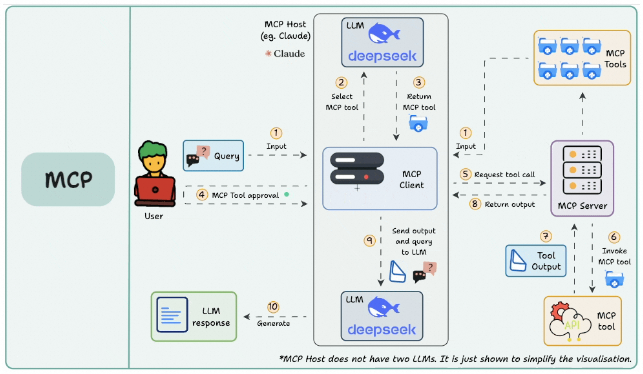

如何给人深度科普 MCP¶
原文：别再误会MCP了！一篇写给AI工程师的硬核“辟谣”指南
来源：https://mp.weixin.qq.com/s/EcDCKN4-movoU2JgIqZSXg
前言：直面误解，回归工程
虽然之前对于MCP有过一次调研，但是最近上手在做一些MCP的工程实践的过程中，确实发现还是有很多误解。我翻阅了许多技术文章，以及协同沟通的时候发现，往往大家天然的将MCP简单地视为一种“更高级”或“可跨模型”的Function Calling。这种认知偏差，不仅掩盖了MCP作为一套软件工程协议的真正价值，更可能导致在技术选型和系统架构设计上的严重误判。
当一个集成了20个OpenAPI工具的MCP应用，其单次请求的Token消耗轻易突破60K，导致成本和延迟飙升时；当生产环境中的模型因为一个微小的Prompt变动而出现大面积的工具调用格式错误时，我们必须扪心自问：我们是否真的理解了MCP的本质？
于是提笔，希望将本文作为一篇写给AI工程师的硬核“辟谣”指南，旨在彻底澄清这一混淆。并提出并严谨论证一个核心观点：MCP本质上是一套模型无关的、用于构建可互操作AI应用的工程协议，其核心组件Server/Client与LLM的智能决策并无直接关联。
我们将以架构师的视角，遵循“假设-验证”的逻辑链条，通过以下路径展开论证：
- 架构分析：从官方文档出发，将普遍的“CS架构”误解纠正为“CHS三组件”的本质，并精确界定各组件的工程职责。
- SDK检验：深入MCP官方SDK的Server与Client实现，用代码事实证明其作为纯粹RPC中间件的模型无关性。
- Host解剖：以开源项目CherryStudio为例，精准定位Host组件中构建Prompt和调用LLM的“犯罪现场”，找到AI能力的真正归属。
- 重回概念：重新回到概念，清晰切割MCP（基础设施协议）与Function Calling（模型决策能力）的边界，并通过伪代码比较两者的流行实现。 最终，回归工程的第一性原理，围绕“效果和成本”，重新审视MCP在AI应用开发中的真实角色。
第一章：剖析MCP核心架构：从CS误解到CHS本质
1.1 普遍误解：为何MCP架构常被错认为CS？
对于任何初次接触Model Context Protocol（MCP）的工程师来说，一个普遍的认知陷阱源于其官方文档中的核心架构图。这张图直观上呈现了一个客户端与服务端进行交互的经典形态，极易让人先入为主地将其归类为传统的Client-Server（CS）架构。

参考1《MCP架构》
然而，这种基于视觉相似性的判断，是导致后续一系列概念混淆的根源。它不仅是一个微不足道的命名偏差，更从根本上模糊了MCP设计的核心思想。官方规范开宗明义地指出：
"The Model Context Protocol (MCP) follows a client-host-server architecture."
这一定义明确地将Host引入，构成了理解MCP的关键。将一个三组件（Client-Host-Server, CHS）系统误读为两组件（CS）系统，会直接导致对协议职责、数据流向和AI能力归属的严重误判，为后续的系统设计与问题排查埋下隐患。
1.2 CHS三组件职责详解：Host、 Client 与 Server
要彻底破除CS误解，就必须用精确的工程语言，对CHS三组件的职责边界进行严格界定。它们在MCP生态中扮演着截然不同且相互解耦的角色。
- Host：AI智能的唯一承载者
- Host是整个系统中唯一与大型语言模型（LLM）直接交互的组件。其核心任务包括：管理完整的对话上下文、动态构建和拼接Prompt、解析LLM的响应、根据AI决策生成与MCP Server交互的指令。简而言之，一个MCP应用的“智能水平”完全由其Host的实现质量决定。
- Server：确定性能力的执行器
- Server是一个标准的网络服务，它向外界声明并提供一组具有确定性的、可供远程调用的能力（Capabilities）。这些能力可以是工具调用、文件操作等（全量枚举源码里有）。Server接收标准化的请求，执行相应的能力，并返回确定的结果。它不包含任何AI逻辑，其行为是可预测且可靠的。值得注意的是，工具调用只是其众多规划能力中的一种，尽管是目前最常用的一种。
- Client：无状态的协议中间件
- Client的角色最为纯粹，它是一个位于Host和Server之间的协议客户端和状态管理器。它严格实现了MCP的通信协议，负责处理协议握手、会话管理、心跳维持以及将Host的意图（如“调用某个工具”）转换为符合MCP规范的JSON-RPC请求并发送给Server。它不关心业务逻辑，也不理解AI意图，仅作为连接Host与Server的标准化通信管道。 通过上述定义，我们可以清晰地看到，将Host与Client混为一谈是问题的核心。社区中流传的许多图表之所以引起误解，正是因为它们将承载AI逻辑的Host与负责协议通信的Client绘制成了一个模糊的整体，掩盖了MCP架构设计的精髓。

图中容易引发Client发起了大模型调用的误会
引用来自：https://blog.dailydoseofds.com/p/function-calling-and-mcp-for-llms
图中容易引发Client发起了大模型调用的误会
https://modelcontextprotocol.io/specification/2025-06-18/server/tools
第二章：深入SDK源码：Server与Client的模型无关性证明
2.4 结论：Server与Client作为纯粹的工程中间件
基于对SDK生命周期和请求处理流程的法证式分析，我们可以得出结论：
- MCP Server 是一个实现了MCP协议的、模型无关的RPC服务端。它的核心职责是：在启动时声明能力、通过initialize握手交换元数据、并将符合规范的JSON-RPC请求分发给预定义的确定性函数执行。
- MCP Client（基于协议对称性）扮演着完全对等的角色：一个RPC客户端。它的职责是将Host的指令封装成标准化的JSON-RPC请求，发送给Server，并接收响应。 它们共同构成了MCP协议的通信层。它们是连接AI智能（Host）与确定性能力（Server Tools）之间的标准化管道，而不是管道中流淌的“智能”本身。误以为它们与LLM有直接关联，就如同误以为HTTP协议本身能够理解网页内容一样，是一种根本性的概念混淆。
第三章：Host实战解剖：在CherryStudio中定位LLM交互
在理论和源码分析之后，本章我们将进入实战，通过解剖一个非常流行的开源项目来定位LLM交互的精确位置。这个案例将最终证明：在MCP体系中，所有与AI智能相关的复杂工作，均由Host组件承担。
3.1 案例背景：CherryStudio中的Host拆分实现
我们的分析对象是CherryStudio，一个基于Electron构建的AI桌面应用。由于Electron特殊的双进程架构（主进程+渲染进程），CherryStudio对MCP Host的实现进行了一次职责拆分，观察起来变得更加清晰：
- 主进程：运行在Node.js环境中，负责系统级操作和网络通信。其中MCPService.ts封装了Client能力和一部分Host调用职责，主要作为与外部MCP Server通信的代理。
- 渲染进程：运行在内置浏览器环境中，负责UI渲染和用户交互。其中ApiService.ts承担了Host的核心AI职责，包括Prompt构建和LLM调用。 这种拆分清晰地隔离了协议通信与AI逻辑，让我们能更精确地追踪数据流和决策过程。
渲染进程：构建Prompt并调用LLM的ApiService.ts
本章的核心发现位于渲染进程的 src/renderer/src/services/ApiService.ts。 这里是所有AI智能的汇聚点，是Host大脑的真正所在。当用户提交一条消息后，ApiService.ts中的fetchChatCompletion函数 编排了一个复杂的AI工作流：
- 工具发现：通过IPC调用主进程的MCPService.ts，获取当前可用MCP Server提供的工具列表（window.api.mcp.listTools()）。
- 系统提示词构建：调用buildSystemPromptWithTools函数，将获取到的工具定义（包括名称、描述、参数Schema）格式化后，注入到一个庞大的System Prompt中。这个Prompt指导LLM如何理解和使用这些工具。
- 大模型调用：这是决定性的证据。代码最终调用了AI.completionsForTrace，这是一个封装了对底层AI Provider（如OpenAI、Anthropic）API请求的函数。
// src/renderer/src/services/ApiService.ts (fetchChatCompletion 函数核心逻辑) // 发现MCP 服务器中提供的Tools const mcpTools = await window.api.mcp.listTools(activeMcpServer); // 把Tools的函数名、用途、参数解析一起构建一个系统提示词 const systemPrompt = buildSystemPromptWithTools(mcpTools); const messages = [ { role: 'system', content: systemPrompt }, ...conversation ]; // 异步调用大语言模型 const completionsParams: CompletionsParams = { messages: messages, // ... other parameters }; await AI.completionsForTrace(completionsParams, requestOptions);
Host是承载AI智能的唯一组件
通过对CherryStudio的实战解剖，我们得出了与前两章完全一致的结论：
- MCP Server 提供了确定性的能力。
- MCP Client 负责标准化的通信。
- MCP Host（在CherryStudio中由ApiService.ts和MCPService.ts共同实现）承担了全部的AI智能工作：它发现工具，它构建Prompt，它调用LLM，它解析结果。 一个MCP应用的最终效果——无论是工具调用的准确性，还是对话的流畅性——本质上取决于其Host的实现水平，尤其是Prompt工程的质量和对LLM能力的驾驭。MCP协议本身只提供了一个稳固的工程舞台，而Host才是舞台上真正的“主角”。
第四章：概念辨析：MCP与Function Calling的层级与关系
通过前三章的分析，我们已经从工程角度证明了MCP的核心是模型无关的协议。现在，我们需要在概念层面，将其与另一个广受欢迎的技术 Function Calling 进行清晰的切割。作为同样可以通过大模型调用外部工具的方法，因为MCP出现时间更晚且支持范围更广，将MCP视为“更高级的Function Calling”是一个更大的误解，这是一种将不同层级概念混为一谈的错误认知。
4.1 角色定位：基础设施协议 vs. 模型决策能力
要理解二者的关系，首先必须明确它们在AI应用工作流中所处的不同层级和扮演的根本角色。
- Function Calling：是一种内嵌于LLM中的模型决策能力。它解决了“决定做什么”的问题。当模型具备Function Calling能力时，它能根据对话上下文，自行决定是否需要调用外部工具，并以结构化的格式（如JSON）返回调用意图（函数名和参数）。这是LLM自身推理能力的延伸。
- MCP：是一套定义“如何调用”的基础设施协议。它解决了工具的标准化、发现、安全和互操作性问题。MCP将外部工具抽象为标准化的、可通过网络访问的服务。它就像软件工程中的 REST API 或 gRPC，为AI应用提供了一个统一、解耦的工具调用框架。 因此，Function Calling是AI的“大脑”，而MCP是连接大脑与外部世界的“神经系统”。它们并非替代关系，而是协作关系，共同构成一个完整的“感知-决策-行动”循环。
4.2 工程实现对比：从伪代码看解耦优势
通过并列对比两种实现方式的伪代码，我们可以直观地看到MCP带来的工程价值。假设我们的任务是实现一个查询云服务ECS规格的工具。
还是Python的语法写起来舒服，各位看官切换一下语言，反正是伪代码随意一点。
"""
Function Calling vs MCP 模式对比
演示传统Function Calling和基于MCP的两种实现方式
"""
*# ================================================================================================*
*# 场景一：传统的Function Calling 的Python伪代码实现*
*# （Function Calling意图识别 + 自行实现函数调用）*
*# ================================================================================================*
*## Step1. 调用大模型意图识别*
messages = [{"content": "用户问句，帮我查一下杭州4C8G的ECS规格？", "role": "user"}]
assistant_output = call_llm(messages, *tools*=TOOLS) *# 注意：这里直接传递了数据结构，不再需要文本拼接*
*## Step2. 读取意图识别结果，并且本地调用工具*
*if* assistant_output['tool_calls']['function']['name'] == 'describe_instance_types':
tool_info = {"name": "describe_instance_types", "role": "tool"}
arguments = json.loads(assistant_output['tool_calls']['function']['arguments'])
param_1 = arguments['param_1']
param_2 = arguments['param_2']
*# 调用工具*
tool_info['content'] = describe_instance_types(param_1, param_2)
*elif* assistant_output['tool_calls']['function']['name'] == 'describe_regions':
tool_info = {"name": "describe_regions", "role": "tool"}
*# 调用工具*
tool_info['content'] = describe_regions()
*## Step3. 返回结果*
messages.append(tool_info)
final_assistant_output = call_llm(messages)
*## 工具定义*
TOOLS = [
{
"type": "function",
"function": {
"name": "describe_regions",
"description": "查询地域",
"parameters": {},
}
},
{
"type": "function",
"function": {
"name": "describe_instance_types",
"description": "查询实例规格表",
"parameters": {
"properties": {
"param_1": {"类型、描述、举例"},
"param_2": {"类型、描述、举例"},
}
}
}
}
]
*## 工具实现*
def describe_regions():
...
*## 工具实现*
def describe_instance_types(*param_1*, *param_2*):
...
*# 在这种模式下，工具的定义、实现和调用逻辑全部硬编码在Host应用中。*
*# 这导致了高度的耦合：每增加或修改一个工具，都需要修改并重新部署整个应用。*
*# ================================================================================================*
*# 场景二：基于MCP 的Python伪代码实现*
*# （Prompt模式意图识别 + MCP Tools Call）*
*# ================================================================================================*
*## Step0. 初始化MCP客户端*
client = Client()
*await* client.connect("...")
tools = *await* client.list_tools()
*## Step1. 调用大模型意图识别*
messages = [
{"role": "system", "content": build_mcp_tool_prompt(tools)}, *# 注意：这里是文本拼接了Prompt*
{"role": "user", "content": "帮我查一下杭州4C8G的ECS规格？"}
]
assistant_response = *await* call_llm(messages)
*## Step2. 解析意图识别结果，并且远程调用工具*
tool_call = parse_tool_use(assistant_response)
result = *await* client.call_tool(
*name*=tool_call["name"],
*arguments*=tool_call["arguments"]
)
*## Step3. 结果输出*
messages.append({"result": result})
final_response = *await* call_llm(messages)
*## 工具定义 TOOLS 不再需要，client.list_tools()获得*
*## 工具实现 def describe_regions()不再需要，client.call_tool()调用*
*## 新增：通用意图识别提示词构建*
def build_mcp_tool_prompt(*tools*):
tool_descriptions = ""
*for* tool *in* tools:
tool_descriptions = tool_descriptions + f"<tool>{tool['name']}</tool>\n"
*return* f"""你是一个智能助手，可以使用以下工具来帮助用户解决问题。
可用MCP工具列表：
{tool_descriptions}
请使用以下XML格式调用工具：
<tool_use>
<name>{{工具名称}}</name>
<arguments>{{JSON格式参数}}</arguments>
</tool_use>
示例：
<tool_use>
<name>DescribeInstanceTypes</name>
<arguments>{{"param_1": "cn-hangzhou", "param_2": "4C8G"}}</arguments>
</tool_use>
"""
*## 新增：解析大模型输出获得工具和入参*
def parse_tool_use(*response*):
tool_use_regex = re.compile(
r"<tool_use>\s*<name>(.*?)</name>\s*<arguments>(.*?)</arguments>\s*</tool_use>",
re.DOTALL
)
match = tool_use_regex.search(response)
tool_name, arguments_str = match.groups()
*return* {"name": tool_name, "arguments": arguments_str}
*# 在MCP模式下，Host应用转变为一个纯粹的AI决策和调度中心。*
*# 它不关心工具如何实现，只关心如何通过标准化协议mcp_client.call_tool()来调用它们。*
*# 这种彻底的解耦带来了巨大的工程优势：*
*# - 标准化与互操作性：任何实现了MCP Server的工具，都可以被Host"即插即用"，无需定制开发。*
*# - 独立演进：工具（MCP Server）和AI应用（MCP Host）可以独立开发、部署和扩展。*
*# - 可维护性：Host的代码变得更加简洁，只关注核心的AI逻辑。*
4.3 协作而非替代：Host中融合MCP与Function Calling的策略
一个成熟的Host实现，会根据模型的具体能力，智能地选择使用Function Calling或基于Prompt的指令来与MCP Server交互。CherryStudio项目就是这种融合策略的绝佳范例。
在其Host实现中，存在一个双重意图识别机制：
1.能力检测：首先通过 isFunctionCallingModel（判断模型名称、供应商等） 函数判断当前配置的LLM是否原生支持Function Calling。
2.策略切换：
- 如果模型支持Function Calling：Host会将从MCP Server获取的工具列表，通过mcpToolsToOpenAIChatTools函数转换成符合OpenAI规范的tools参数，直接利用模型原生的Function Calling能力进行决策。
- 如果模型不支持：Host会回退到“Prompt Engineering”模式，将工具定义拼接成XML格式的文本，注入System Prompt中，并依赖parseToolUse函数从LLM返回的纯文本中用正则表达式提取
标签，来解析工具调用意图。 这个设计证明了：Function Calling和基于Prompt的指令生成，都是Host用来驱动MCP协议的“上层决策方法”。MCP作为底层基础设施，对上层决策方式保持中立。因此，MCP不仅不是Function Calling的替代品，反而可以与Function Calling（或其他意图识别技术）无缝协作，各司其职。
第五章：实践出真知：决定MCP应用效果的三大关键因素
至此，“采用MCP就等于获得优异AI应用效果”的观点显然已不成立。MCP本身作为一套工程协议，只提供了“可能性”，并未保证“有效性”。一个高性能的MCP应用，其最终表现取决于Host如何协同三大关键技术因素：工具（Tools）的质量、提示词（Prompt）的精度，以及大模型（LLM）自身的核心能力。这三者共同构成了一个系统的性能边界。
5.1 因素一：工具的质量与原子性
工具是AI行动的触手，其设计质量直接决定了行动的有效范围和可靠性。
- 原子性：工具应遵循单一职责原则。一个“管理云主机”的万能工具，其决策复杂度远高于一组原子化的工具（如 create_instance, get_instance_status, stop_instance）。原子化使LLM能更灵活地组合工具以完成复杂任务。
- 接口定义的精确性：工具的inputSchema是LLM生成参数的唯一依据。一个模糊的描述如"description": "pod name"，远不如一个精确的定义有效："description": "The name of the Kubernetes pod, must follow RFC 1123 DNS label format"。后者能极大提升参数生成的准确率。
- 可靠性与幂等性：工具后端必须高可用。对于任何写操作，接口应设计为幂等的，允许Host在网络超时等不确定情况下安全重试，而不会产生重复创建资源的副作用。 尽可能满足 MECE，并且遵循单一原则，但是实际情况可能不是， 比如直接由传统的 API 封装而来，两种处理方案：
1、重新开发 for AI 接口，成本高，更规范，实际场景中大概率没人陪你这么玩
2、封装层，相似接口合并，做好工具管理
2.1 可以考虑 tool set，langgraph 管理的方式，召回工具
2.2 可以考虑封装为高级工具，职责解耦，可能导致时延
2.3 让模型“深度”学会这些乱七八糟的工具怎么用，成本还是高
5.2 因素二：提示词工程的精确性
在依赖Prompt进行意图识别时，Prompt是Host传递给LLM的“作战指令”，其工程质量是AI决策水平的核心变量。
- System prompt
-
Tool description 5.3 因素三：大模型自身的核心能力
-
推理与规划能力：action chain，这个也依赖于 Agent RL
- 指令遵循与格式生成能力、结构化输出能力
- 参数生成准确性：即便选对工具，能否从用户模糊的对话（如“查一下web主服务的日志”）中准确提取并生成符合Schema的参数（如 {"pod_name": "webapp-main-7f9c8d...", "namespace": "production"}），是决定工具调用成败的“最后一公里”，直接依赖模型对上下文和Schema的理解能力。
- 第六章：现实的权衡：MCP方案的固有挑战与成本
在认可MCP作为工程框架的价值之后，我们必须以现实主义的视角审视其引入的固有挑战与成本。任何架构决策都是一种权衡，MCP也不例外。尤其是在Host依赖Prompt而非原生Function Calling来实现意图识别时，其代价在两个维度上尤为突出：Token成本和意图识别的稳定性。
6.1 挑战一：上下文过长，工具比如各种 MAS 框架都是通过拼接的，一般也是框架管理，改不了，但是 prompt 中需要定义好如何用不同的工具解决复杂任务
6.2 挑战二：依赖模型能力的意图识别稳定性问题
当Host将意图识别的重任完全交给LLM对Prompt的“自由发挥”时，系统的可靠性便直接与模型的“指令遵循能力”挂钩，这引入了诸多工程上的不确定性。
- 格式错误：生成未闭合或错误的XML标签，如
，或者在 块内生成不符合JSON规范的字符串（如引号缺失、尾部逗号），导致反序列化失败。 -
参数幻觉 与原生Function Calling相比，基于Prompt的参数生成更容易出现“幻觉”。模型完全依赖其对工具description的文本理解来构建参数。这导致了两种典型风险：
-
参数名幻觉：编造一个inputSchema中不存在的参数名。
- 参数值幻觉：从用户对话中错误地提取或捏造一个值，并填入参数中。
- 对提示词工程的过度敏感性 系统的表现与Prompt的微观设计高度耦合。对System Prompt的任何微小调整，都可能引起模型行为的蝴蝶效应，导致原有的稳定表现衰退。这使得Prompt的维护成本极高，每一次迭代都需要进行大量的回归测试，以确保关键路径的稳定性不受影响。
结论：回归工程本质——MCP的真正价值与未来展望
结论：MCP本身并不产生智能。它既不是更聪明的Function Calling，更不是解决AI Agent所有难题的银弹。相反，它是一套严谨、模型无关的软件工程框架，其核心价值在于为构建一个复杂、异构、可互操作的AI工具生态系统，提供了坚实的工程底座。
MCP的真正贡献，在于它通过“关注点分离”这一经典的工程思想，实现了不确定的AI智能（Host）与确定的能力执行（Server）之间的彻底解耦。这一设计带来了三个优势：
- 标准化：它为“AI工具”提供了统一的接口规范，如同Web世界的HTTP协议，让任何能力都能被标准化地接入和消费。
- 解耦：它将AI应用的“大脑”（Host）与“手脚”（Server）分离开来，使得二者可以独立开发、部署、迭代和扩展，极大地提升了系统的可维护性和演进效率。
- 互操作性：它打破了模型、厂商与工具之间的壁垒，为构建一个跨平台、跨语言的统一AI Agent生态铺平了道路。 这种工程层面的价值，使得开发者能够从繁琐的、非标的底层通信和工具适配工作中解放出来，将全部精力聚焦于真正决定应用成败的核心——提升Host的“智能”：优化提示词工程、选择更强的模型、设计更复杂的任务规划与调度逻辑。
随着AI Agent从单体应用走向分布式、协作式的“Agent网络”，MCP所倡导的标准化与互操作性将变得愈发重要。它不仅是当前构建健壮AI应用的务实选择，更是未来实现“万物皆可为AI之工具”这一宏大愿景的关键。对于每一位致力于将AI从“玩具”推向“工业级生产力”的工程师而言，深刻理解并善用MCP的工程本质，或许正是我们在这场技术变革中，最强大的武器。
以上。
参考文档：
参考1：MCP架构：https://modelcontextprotocol.io/specification/2025-06-18/architecture
参考2：FunctionCalling与MCP：https://blog.dailydoseofds.com/p/function-calling-and-mcp-for-llms
参考3：CherryStudio：https://github.com/CherryHQ/cherry-studio